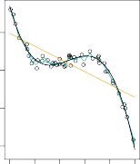

| < 2.1.2.2 Non-Parametric Methods | 2.1.4 Supervised Versus Unsupervised Learning > |
💡 학습 팁: 조금 더 쉽고 재미있게 공부하고 싶으신가요? 이 페이지는 중학생도 이해할 수 있는 친절한 ‘쉬운 해설판’입니다! 영어 원문을 문장 단위로 꼼꼼하게 번역한 느낌을 원하신다면 📖 직역본 보기 메뉴를 활용하세요!
2.1.3 The Trade-Off Between Prediction Accuracy and Model Interpretability
2.1.3 예측 정확도와 모델 해석력 간의 상충 관계 (정확하지만 기괴한 기계 vs 멍청하지만 착한 기계)
Of the many methods that we examine in this book, some are less flexible, or more restrictive, in the sense that they can produce just a relatively small range of shapes to estimate f. 이 머리 아픈 책에서 우리가 물고 뜯을 수많은 통계 기법들 중 어떤 녀석들은 굉장히 뻣뻣하고 고집불통(제한적)입니다. 요놈들은 오직 아주 단순하고 딱딱한 몇 가지 모양으로만 짝퉁 f 를 찍어낼 수 있거든요.
For example, linear regression is a relatively inflexible approach, because it can only generate linear functions such as the lines shown in Figure 2.1 or the plane shown in Figure 2.4. 그 대표적인 꼰대가 바로 ‘선형 회귀’입니다! 이 녀석은 융통성이라곤 1도 없어서 오로지 딱딱한 직선(그림 2.1)이나 평평한 판때기(그림 2.4) 모양 말고는 지옥에 가도 못 그립니다.
Other methods, such as the thin plate splines shown in Figures 2.5 and 2.6, are considerably more flexible because they can generate a much wider range of possible shapes to estimate f. 반대로 ‘얇은 판 스플라인’ (그림 2.5, 2.6) 같은 미친 자유영혼들은 철사처럼 맘대로 휠 수 있어서, f 의 모양을 그릴 때 온갖 요상한 곡선과 꼬불꼬불한 지형도를 기가 막히게 다 뽑아낼(유연한) 수 있죠.

FIGURE 2.7. A representation of the tradeoff between flexibility and interpretability, using different statistical learning methods. In general, as the flexibility of a method increases, its interpretability decreases.
그림 2.7. 유연성(Flexibility)과 설명력(Interpretability) 사이의 피 튀기는 딜레마(상충 관계)를 만화처럼 그려봤습니다. 보통 기계가 유연해지고 똑똑해져서 곡선을 막 그릴수록, 반대급부로 “너 도대체 왜 그렇게 예측했어?” 하고 물었을 때 대답(해석력)을 못 하는 바보가 돼버립니다.
One might reasonably ask the following question: why would we ever choose to use a more restrictive method instead of a very flexible approach? 이쯤 되면 똑똑한 독자들은 당연히 이런 태클을 걸 겁니다. “아니, 고무줄처럼 맘대로 확확 휘어지면서 정답을 찰떡같이 때려 맞추는 기법이 널렸는데, 왜 굳이 막대기같이 뻣뻣하고 구린 기법(제한적 모델)을 쓰는 건배요?”
There are several reasons that we might prefer a more restrictive model. 우리가 그 막대기 같은 꼰대(제한적) 모델을 더 사랑하고 감싸 안아야 하는 눈물겨운 이유가 몇 가지 있습니다.
If we are mainly interested in inference, then restrictive models are much more interpretable. 만약 우리의 목표가 단순히 과녁을 맞추는 게 아니라 “도대체 원인이 뭐냐?” 하고 캐묻는 ‘추론(Inference)’ 에 있다면, 그 단순무식한 막대기 모델들이 훨씬 사장님께 보고서 쓰기(해석하기)가 꿀이거든요!
For instance, when inference is the goal, the linear model may be a good choice since it will be quite easy to understand the relationship between Y and $X_1, X_2, \dots, X_p$. 예를 들어 범인을 잡는 게 목표라면, 선형 모델 같은 녀석은 “아, 이 힌트($X_1$)가 1 오를 때 정답($Y$)이 3씩 꼬박꼬박 오르네?” 하고 둘 사이의 원인과 결과를 유치원생도 알게끔 아주 속 시원히 까발려줍니다.
In contrast, very flexible approaches, such as the splines discussed in Chapter 7 and displayed in Figures 2.5 and 2.6, and the boosting methods discussed in Chapter 8, can lead to such complicated estimates of f that it is difficult to understand how any individual predictor is associated with the response. 반대로 저 뒤의 7장, 8장에서 나올 스플라인이니 부스팅이니 하는 끝판왕 유연한 모델들은 속이 완전히 꼬블꼬블한 우동사리처럼 꼬여있습니다. 정답은 귀신같이 찾아오는데, “이 힌트 때문에 정답이 변한 게 맞아?” 하고 물어보면 복잡한 수식 속에 파묻혀 절대 인간의 말로 설명을 못 해냅니다 (이게 그 유명한 AI의 블랙박스 문제입니다).
Figure 2.7 provides an illustration of the trade-off between flexibility and interpretability for some of the methods that we cover in this book. 아까 본 그림 2.7은 우리가 이 책에서 뚜드려 팰 여러 무기들(기법들)이 유연성 계단과 설명력 계단에서 어디쯤 위치하는지 대충 견적을 내 보여준 겁니다.
Least squares linear regression, discussed in Chapter 3, is relatively inflexible but is quite interpretable. 3장의 샌드백인 ‘최소 제곱 선형 회귀’는 지루할 정도로 뻣뻣한(유연성 최하) 놈이지만, 설명력 하나만큼은 눈물 나게 끝내줍니다(해석력 최상).
The lasso, discussed in Chapter 6, relies upon the linear model (2.4) but uses an alternative fitting procedure for estimating the coefficients $\beta_0, \beta_1, \dots, \beta_p$. 6장에서 배울 ‘라쏘(Lasso)’ 라는 놈은 똑같이 선형 모델 옷을 입고 있지만, $\beta$ 숫자들을 조립할 때 약간 변태 같고 새로운 꼼수를 씁니다.
The new procedure is more restrictive in estimating the coefficients, and sets a number of them to exactly zero. 이 꼼수가 뭐냐면, 잔챙이 힌트들의 계수를 진짜 무자비하게 가차 없이 ‘정확히 0’ 으로 확 날려버리는 아주 억압적인(제한적인) 칼춤을 춘다는 겁니다.
Hence in this sense the lasso is a less flexible approach than linear regression. 그래서 라쏘는 일반 선형 회귀보다도 움직일 공간이 더 꽉 막히고 답답한(유연성 바닥) 불쌍한 놈입니다.
It is also more interpretable than linear regression, because in the final model the response variable will only be related to a small subset of the predictors—namely, those with nonzero coefficient estimates. 근데 이게 대박인 게 뭡니까? 잔챙이 힌트들이 0으로 싹 다 뒤져버리니까, 최종 결승선엔 진짜 핵짱짱 중요한 알짜 힌트 몇 개만 살아남습니다. 그래서 사장님께 “이겁니다!” 하고 핀셋으로 집어 설명하기가 일반 선형 회귀보다도 훨씬 기가 막히게 편해집니다(해석력 쌉상타치).
Generalized additive models (GAMs), discussed in Chapter 7, instead extend the linear model (2.4) to allow for certain non-linear relationships. 7장에서 배울 ‘일반화 가법 모델(GAMs)’ 은 직선 모델에다 슬쩍 고무줄을 달아서, 힌트들이 약간씩 둥글둥글하게 변하는 것(비선형 관계)을 조금 눈감아 줍니다.
Consequently, GAMs are more flexible than linear regression. 당연히 고무줄을 달았으니 뻣뻣한 일반 선형 회귀보다는 몸놀림(유연성)이 훨씬 낫죠.
They are also somewhat less interpretable than linear regression, because the relationship between each predictor and the response is now modeled using a curve. 근데 선 대신 구불구불 곡선으로 퉁쳤으니, “딱 이만큼 오르면 이만큼 떨어집니다!” 라고 단칼에 속 시원히 말하긴 좀 애매해져 버렸습니다(해석력 소폭 하락).
Finally, fully non-linear methods such as bagging, boosting, support vector machines with non-linear kernels, and neural networks (deep learning), discussed in Chapters 8, 9, and 10, are highly flexible approaches that are harder to interpret. 마지막으로 8~10장에 등판할 암흑계의 사천왕들! 배깅, 부스팅, 서포트 벡터 머신(SVM), 그리고 영광의 딥러닝(신경망) 까지. 이 미친 놈들은 상상을 초월하게 유연해서 떡치듯 모양을 다 맞추지만, 그 대가로 속눈썹이 몇 갠지 모를 정도로 블랙박스화 돼서 도통 인간이 해석할 수 없는 절망을 안겨줍니다.
We have established that when inference is the goal, there are clear advantages to using simple and relatively inflexible statistical learning methods. 자, 여기서 교통정리 들어갑니다. 만약 여러분의 미션이 “왜 이렇게 됐을까 원인을 알아내라!(추론)”라면, 욕심 버리고 가장 단순무식하고 뻣뻣한 고전 통계학 모델을 쓰는 게 백번 천번 유리합니다.
In some settings, however, we are only interested in prediction, and the interpretability of the predictive model is simply not of interest. 하지만 반대로 방구석에서 주식 코인 차트만 보며 “원리 따윈 개나 줘, 내일 오르냐 내리냐(예측)!” 에만 온 관심이 쏠려있고 모델의 해명 따윈 1도 안 궁금할 때가 있죠.
For instance, if we seek to develop an algorithm to predict the price of a stock, our sole requirement for the algorithm is that it predict accurately— interpretability is not a concern. 예컨대 주식 봇을 만들 땐 그놈이 딥러닝이든 짬뽕이든 내일 삼성전자 주가를 토씨 하나 안 틀리고 정확히 예측해 주는 것 단 하나만이 알파요 오메가입니다. “왜 올라?”라는 해석 가능성 따윈 쓰레기통에나 던지면 되거든요.
In this setting, we might expect that it will be best to use the most flexible model available. 이런 피도 눈물도 없는 성적(예측) 지상주의 세계관에선, 당연히 동네에서 제일 비싸고 고무줄처럼 엄청나게 유연한 끝판왕 모델을 쓰는 게 무조건 짱일 거라고 기대하게 됩니다.
Surprisingly, this is not always the case! 그런데 뒤통수를 후려치게도! 실전에선 이 공식이 항상 통하지 않습니다. (에엥?)
We will often obtain more accurate predictions using a less flexible method. 믿기 힘들겠지만, 딥러닝 같은 끝판왕을 썼다가 개털리고, 오히려 멍청하고 덜 유연한 꼰대 모델을 썼더니 주가를 훨씬 더 쪽집게처럼 잘 예측하는 어처구니없는 일이 심심찮게 터집니다!
This phenomenon, which may seem counterintuitive at first glance, has to do with the potential for overfitting in highly flexible methods. 이 얼척없는 하극상 현상은 바로 아까 말했던, 지나치게 유연한 자들의 저주인 ‘과적합(Overfitting, 소음까지 외워버리는 바보짓)’ 의 함정 때문입니다.
We saw an example of overfitting in Figure 2.6. 아까 그림 2.6에서 수건이 미친 듯이 뾰족뾰족 요동치며 쓰레기 예측을 하던 그 끔찍한 사태, 기억하시죠?
We will discuss this very important concept further in Section 2.2 and throughout this book. 통계학 최대의 빌런인 이 ‘과적합’ 개념에 대해선 2.2절부터 시작해서 책 껍데기를 덮을 때까지 두고두고 아주 골수까지 빨아먹으며 설명해 드리겠습니다.
Sub-Chapters (하위 목차)
| < 2.1.2.2 Non-Parametric Methods | 2.1.4 Supervised Versus Unsupervised Learning > |